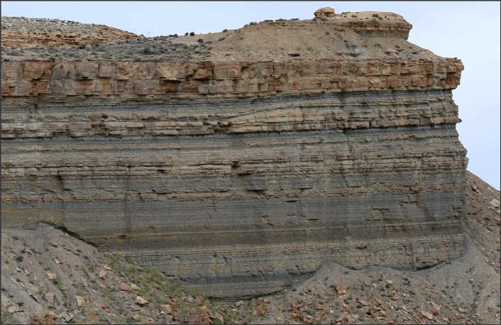

Modelling depositional environments with a Stepped Dirichlet Process
code
statistics
Author
Nicholas Dorsch
Published
June 3, 2025

Introduction
My favourite aspect of studying Geology was field work. I found it amazing how much information about a depositional system could be derived from outcrop and core scale observations. It is a peculiar thing to make such strong inferences about systems that existed millions of years in the past, that we can never verify, and its inevitable that arguments over particular interpretations will occur.
Coming at this from a bayesian perspective, it seems like there should be a framework for creating a distribution over geological interpretations. Speaking about sedimentary sequences specifically, it seems like there are tools on the table in bayesian statistics to use.
The Dirichlet Distribution
The Dirichet distribution can be used to model the probability of a set of categories, which in this context would be depositional environments. The Dirichlet distribution samples from a simplex (a vector of numbers that add to 1), which makes it perfect for modelling our uncertainty over interpretations.
It also has the convenient property of conjugacy, which essentially means its very easy to go from prior to posterior, which will be an important part of this process.
Applied to a Simple Example
Let’s say we are considering three depositional environments when looking at part of an outcrop:
Delta
Deepwater turbidite fan
Lake
The \(\alpha\) parameter of the distribution can be thought of as a list of weights, one for each option.
In this case let’s say we assign our weights as:
\[
\alpha = [50, 25, 1]
\]
This equates to us saying that we think the Delta interpretation is most plausible, although the Turbidite interpretation is a possibility, while the Lake interpretation is implausible.
This is the distribution over the probabilities of each of the interpretations. Maybe it seems weird to have a probability distribution over probabilities, but this is actually very common in bayesian statistics. I will write a post on that at some point.
Incorporating Prior Information
Let’s say despite our observations at this outcrop, we have very strong indications nearby that we are standing in the middle of a lake deposit. Maybe the outcrop is an anomaly in an otherwise fairly confident interpretation.
If we encode that prior as \(\alpha_{\text{prior}} = [1, 1, 100]\), it looks like this:
We can incorporate this prior information very easily in our \(\alpha\) parameter by just… adding it! It seems like a dumb trick, but this is an analytical result for updating Dirichlet distributions in what’s called a Dirichlet Multinomial conjugate model.
Now, the strong prior on the Lake interpretation pushes it ahead, but notice the other interpretations are still on the table as possibilities given the evidence observed at the outcrop.
In my view this provides a pretty strong baseline. We have 3 important things:
The ability to encode prior beliefs
The ability to “score” interpretations based on their likelihoods
The ability to update probabilities objectively
This all hinges on a point-scoring system that makes logical sense, but it seems like a good start.
Point Scoring
The way I’m conceptualizing the points involved in this process is that each field observation has an associated \(\alpha\) score which indicates the support it provides to each interpretation in the vector.
To get started I asked Claude for a list of observations and their associated \(\alpha\) scores under the 3 interpretations:
Code
# Create dataframe of sedimentological observations with alpha values# Alpha values represent strength of evidence for each depositional environment# Higher alpha = stronger evidence for that environmentobservations_data = {'observation': ['trough_cross_stratification','planar_cross_stratification', 'ripple_lamination','massive_sandstone','mud_drapes','climbing_ripples','convolute_bedding','flame_structures','load_casts','graded_bedding','flute_casts','groove_casts','mudstone_clasts','plant_debris','bioturbation','varved_lamination','dropstones','shell_fragments','coal_seams','root_traces','channel_lag_deposits','fining_upward_sequences','coarsening_upward_sequences','hummocky_cross_stratification','parallel_lamination' ],# Alpha values for Delta environment'Delta': [15, # trough_cross_stratification - very common in distributary channels12, # planar_cross_stratification - common in delta front8, # ripple_lamination - moderate evidence6, # massive_sandstone - can occur but not diagnostic10, # mud_drapes - good evidence for tidal influence5, # climbing_ripples - possible but not typical3, # convolute_bedding - rare4, # flame_structures - uncommon4, # load_casts - uncommon2, # graded_bedding - rare in delta1, # flute_casts - very rare2, # groove_casts - rare8, # mudstone_clasts - common in channels12, # plant_debris - very common6, # bioturbation - moderate3, # varved_lamination - uncommon1, # dropstones - very rare7, # shell_fragments - moderate evidence15, # coal_seams - very strong evidence14, # root_traces - very strong evidence18, # channel_lag_deposits - extremely strong16, # fining_upward_sequences - very strong13, # coarsening_upward_sequences - strong4, # hummocky_cross_stratification - rare8# parallel_lamination - moderate ],# Alpha values for Turbidite environment 'Turbidite': [3, # trough_cross_stratification - uncommon4, # planar_cross_stratification - uncommon6, # ripple_lamination - moderate in Tc division8, # massive_sandstone - common in Ta division2, # mud_drapes - rare7, # climbing_ripples - moderate evidence12, # convolute_bedding - very common15, # flame_structures - very strong evidence14, # load_casts - very strong evidence18, # graded_bedding - extremely diagnostic16, # flute_casts - very strong evidence13, # groove_casts - strong evidence11, # mudstone_clasts - common at base3, # plant_debris - uncommon2, # bioturbation - rare due to rapid deposition1, # varved_lamination - very rare1, # dropstones - very rare4, # shell_fragments - uncommon1, # coal_seams - very rare1, # root_traces - very rare5, # channel_lag_deposits - uncommon2, # fining_upward_sequences - rare1, # coarsening_upward_sequences - very rare2, # hummocky_cross_stratification - rare12# parallel_lamination - very common in Ta ],# Alpha values for Lake environment'Lake': [2, # trough_cross_stratification - rare3, # planar_cross_stratification - uncommon8, # ripple_lamination - moderate evidence5, # massive_sandstone - uncommon4, # mud_drapes - uncommon3, # climbing_ripples - uncommon5, # convolute_bedding - moderate3, # flame_structures - uncommon4, # load_casts - uncommon7, # graded_bedding - moderate for storm deposits1, # flute_casts - very rare2, # groove_casts - rare3, # mudstone_clasts - uncommon8, # plant_debris - moderate evidence9, # bioturbation - good evidence16, # varved_lamination - very strong evidence14, # dropstones - very strong for glacial lakes6, # shell_fragments - moderate4, # coal_seams - uncommon5, # root_traces - uncommon in lacustrine2, # channel_lag_deposits - rare3, # fining_upward_sequences - uncommon6, # coarsening_upward_sequences - moderate8, # hummocky_cross_stratification - moderate for storms11# parallel_lamination - strong evidence ]}# Create DataFrameobs_df = pd.DataFrame(observations_data)obs_df
observation
Delta
Turbidite
Lake
0
trough_cross_stratification
15
3
2
1
planar_cross_stratification
12
4
3
2
ripple_lamination
8
6
8
3
massive_sandstone
6
8
5
4
mud_drapes
10
2
4
5
climbing_ripples
5
7
3
6
convolute_bedding
3
12
5
7
flame_structures
4
15
3
8
load_casts
4
14
4
9
graded_bedding
2
18
7
10
flute_casts
1
16
1
11
groove_casts
2
13
2
12
mudstone_clasts
8
11
3
13
plant_debris
12
3
8
14
bioturbation
6
2
9
15
varved_lamination
3
1
16
16
dropstones
1
1
14
17
shell_fragments
7
4
6
18
coal_seams
15
1
4
19
root_traces
14
1
5
20
channel_lag_deposits
18
5
2
21
fining_upward_sequences
16
2
3
22
coarsening_upward_sequences
13
1
6
23
hummocky_cross_stratification
4
2
8
24
parallel_lamination
8
12
11
It looks like a great list to me, but I’m not much of a geologist anymore. In the real world these \(\alpha\) scores would have to be calibrated somehow, whether its through expert option or with some kind of data model.
In Action
I don’t have real examples to use, but let’s consider a diligent field geologist’s notes about an outcrop we are considering. For now let’s consider one section of the outcrop that the geo has annotated.
Since Claude is cooking, I’ll use it to dream up this scenario:
FIELD NOTES - Station 15, Muddy Creek Section Date: June 15, 2024 Weather: Overcast, good exposure Geologist: Dr. Sarah Mitchell
INTERVAL: 45.2 - 52.8m (Sandstone Unit C)
DETAILED OBSERVATIONS: Trough cross-stratification: Observed in 7 separate beds, sets 0.3-1.2m thick. Parallel lamination: Very common, counted 12 distinct intervals. Massive sandstone: 3 thick beds (0.8-1.5m), clean, well-sorted. Plant debris: Abundant! Counted 15 fragments/coalified pieces on bedding planes. Ripple lamination: Present in 4 beds, mostly at tops of fining-up sequences. Fining upward sequences: Clear in 5 complete cycles, 2-3m thick each. Channel lag deposits: 2 clear examples at sequence bases, pebble lags. Mud drapes: Rare, only 1 thin example on ripple surface. Bioturbation: Moderate, 6 intervals with Skolithos-type traces.
INTERPRETATION NOTES: This interval screams fluvial-deltaic to me. The trough cross-beds in thick sets, abundant plant material, and those beautiful fining-upward cycles. The channel lags are textbook. Probably distributary channel fill transitioning upward to delta front. Very little marine influence based on lack of mud drapes and bioturbation style.
CONFIDENCE: High - excellent exposure, clear diagnostic features
Claude is… quite good at this.
Wrapping this up into data, we can calculate the posterior \(\alpha\) values using the previous table.
Code
field_observations = {'trough_cross_stratification': 7,'parallel_lamination': 12,'massive_sandstone': 3,'plant_debris': 15,'ripple_lamination': 4,'fining_upward_sequences': 5,'channel_lag_deposits': 2,'mud_drapes': 1,'bioturbation': 6}def calculate_posterior_alphas( obs_df: pd.DataFrame, field_observations: dict[str, int]): alpha_counts = {k: 0for k in obs_df.columns if k !="observation"}for obs, count in field_observations.items(): obs_row = obs_df[obs_df['observation'] == obs]for alpha in alpha_counts.keys(): a = obs_row[alpha].values[0] alpha_counts[alpha] += (a * count)return alpha_countsalpha_dict = calculate_posterior_alphas(obs_df, field_observations)alpha_obs = np.array(list(alpha_dict.values()))
Dr. Mitchell’s remarks were broadly correct, then, though the model only gives about 50% probability to the Delta interpretation.
Incorporating Other Information
In the same way we incorporated priors before, we can use the same procedure to incorporate other information. For example, the geophysicist working on this dataset may have a strong conviction that this is a turbidite deposit based on interpretation of seismic data nearby that connects to this outcrop stratigraphically: